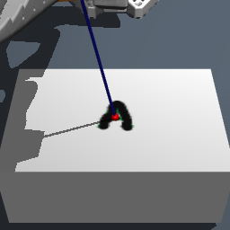
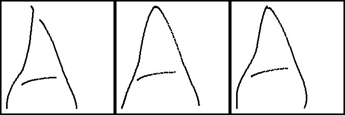
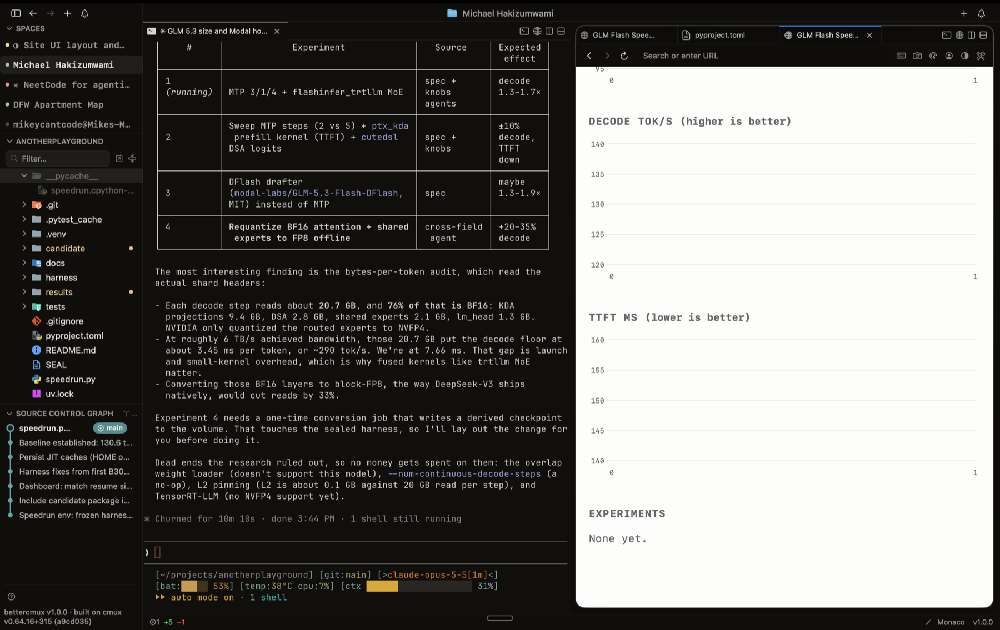

Hi! I'm Michael Hakizumwami, usually I go by Mike. I'm currently based in Dallas, Texas, and am a software engineer at Capital One! I love playing around with computers and love seeing what can be achieved with todays technology. You can usually find me either clauding something up, writing something, or reading a book/twitter. Stuff I am currently interested in: inference, rl environments, 20 year old COBOL financial cores, the 11T$ buildout, among other things. Email & Linkedin are always open for interesting opportunities (startups, things of that nature)
An agent edits the inference stack one small change at a time, benchmarks it on a single Modal B300, and keeps or reverts it. Goal: faster decode and lower time-to-first-token for one user, with output quality gated and every result signed. dashboard · code
loading…
Robot Handwriting VLA
Taught an SO-ARM101 arm to write. MuJoCo + PPO curriculum (0.93–0.97 success), LoRA post-training of π0.5 (3B VLA), then a GRPO-style RL loop that beat the SFT ceiling 2× — ~$7/iteration on Modal.


better cmux
My build of cmux, the agent-native terminal by manaflow-ai — all credit to the original team. I daily-drive it and maintain my own fork.

kmj.partners
Conversational outreach platform for creator clients: FastAPI/Postgres, self-hosted quantized LLM inference on 4090s. ~500K personalized touchpoints; 8-person team, $600K revenue.
in10nt.ai
Platform for persistent AI agents in Firecracker-microVM sandboxes for DevOps automation, architected for thousands of concurrent agents. 4 design partners across 3 MVP iterations; 20+ user interviews drove the roadmap.
Artifactory platform @ Capital One
CI/CD + artifact distribution for 600+ apps bank-wide: cross-account production migration with live federation sync, 24/7 on-call.